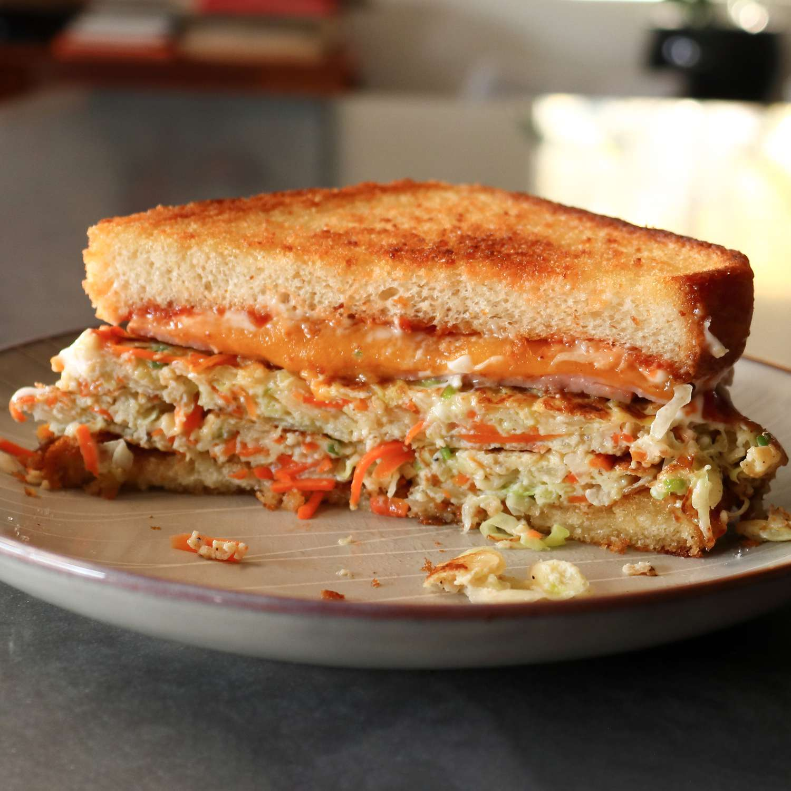

Home
Korean Street Toast

Korean Street Toast is a fun dish. What this recipe
aims to create is a slightly sweet, super savory vegetable and egg patty is sandwiched with smoky ham,
melty Cheddar, and a ridiculous amount of mayo and ketchup between two slices of crispy, buttered bread.
Being a sandwich, the total time to prep and cook is only 25 minutes.
Ingredients
- 1 cup thinly sliced green cabbage
- ⅓ cup julienned carrot
- 1 stalk green onion, thinly sliced
- ½ teaspoon kosher salt, or to taste
- ¼ teaspoon ground black pepper
- 1 pinch cayenne pepper
- 2 large eggs
- 3 tablespoons salted butter, divided
- 2 thick slices white bread
- ½ teaspoon white sugar, or to taste
- 2 thin slices smoked ham
- 1 slice mild Cheddar cheese
- 1 tablespoon ketchup, or to taste
- 1 tablespoon mayonnaise, or to taste
Steps
- Mix cabbage, carrot, green onion, salt, pepper,
and cayenne with your hands in a bowl until soft, about 30 seconds.
Mix in eggs with a fork until thoroughly combined.
- Melt 2 tablespoons butter in a nonstick skillet over medium heat.
Add bread slices and flip a few times to make sure both sides are coated with butter.
Grill bread until beautifully toasted, golden brown, and a little crispy on both sides.
Transfer to a plate.
- Melt remaining 1 tablespoon butter in the same skillet over medium heat.
Add cabbage mixture; cook and simultaneously mix by using the edge of a spatula to chop down on the surface
while pushing the edges up and over the top. As the mixture starts to hold its shape, form it into a rectangle
that's about twice as long as it is wide. Split the rectangle in half into two square patties;
continue to cook until golden brown, 1 1/2 to 2 minutes per side.
- Stack patties on top of one another onto one slice of toast and sprinkle with sugar.
- Place ham slices into the hot skillet; cook over medium heat until sizzling, 1 to 2 minutes.
Flip and top with Cheddar slice; cook until melted, about 1 minute.
- Place ham and cheese on top of patties; top with ketchup, mayonnaise, and remaining slice of toast. Cut in half and serve.
- Enjoy this amazing dish :D!!
Quick Recipe Tip!
- You can use grated carrot instead of julienned, Korean chile flakes instead of cayenne, and American cheese instead of Cheddar.
- To make a smaller sandwich, use fewer vegetables and one egg.